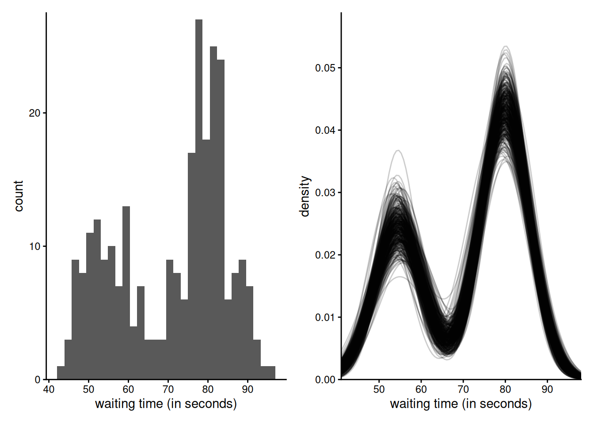

data(upworthy_question, package = "hecbayes")
# Select data for a single question
qdata <- upworthy_question |>
dplyr::filter(question == "yes") |>
dplyr::mutate(y = clicks / impressions, no = impressions)
# Create functions with the same signature (...) for the algorithm
logpost <- function(par, data, ...) {
mu <- par[1]
sigma <- par[2]
no <- data$no
y <- data$y
if (isTRUE(any(sigma <= 0, mu < 0, mu > 1))) {
return(-Inf)
}
dnorm(x = mu, mean = 0.01, sd = 0.1, log = TRUE) +
dexp(sigma, rate = 0.7, log = TRUE) +
sum(dnorm(x = y, mean = mu, sd = sigma / sqrt(no), log = TRUE))
}
logpost_grad <- function(par, data, ...) {
no <- data$no
y <- data$y
mu <- par[1]
sigma <- par[2]
c(
sum(no * (y - mu)) / sigma^2 - (mu - 0.01) / 0.01,
-length(y) / sigma + sum(no * (y - mu)^2) / sigma^3 - 0.7
)
}Week 6: Markov chain Monte Carlo, diagnostics and Gibbs sampling
Metropolis-adjusted Langevin algorithm
The code below considers Langevin steps (equivalent to a damped Newton scheme) for the proposals of the MCMC algorithm. Each step proposes a value in the direction of the gradient (from the current value \(\boldsymbol{\theta}_{\text{cur}}.\) Since the moves are not symmetric, we need to compute the reverse move for the proposal kernel, moving from \(\boldsymbol{\theta}_{\text{prop}}\)
We use data from the Upworthy archive, but this time with a normal likelihood for the rate (since it is an average and sample size are large, the results should be more or less equivalent to our previous analysis using Poisson data).
The log likelihood and log prior functions share the same signature (with ellipsis for additional ignored arguments); this is useful for passing them on to calculate the acceptance ratio. They are also coded to return \(-\infty\) for the negative log likelihood for any infeasible value.
We use starting values as usual obtained from a preliminary optimization of the log posterior. Usually, one could set the starting values at reasonable default (possibly jittered), but it is always harder to specify the ones of the hyperparameters far remote from the data layer.
# Starting values - MAP
map <- optim(
par = c(mean(qdata$y), 0.5),
fn = function(x) {
-logpost(x, data = qdata)
},
gr = function(x) {
-logpost_grad(x, data = qdata)
},
hessian = TRUE,
method = "BFGS"
)
# Check convergence
logpost_grad(map$par, data = qdata)[1] 7.650777e-03 5.575433e-05# Set initial parameter values
curr <- map$par
# Compute a mass matrix
Amat <- solve(map$hessian)
# Cholesky root - for random number generation
cholA <- chol(Amat)Next, we run the algorithm as usual. We use a random walk proposal, but the ratio of proposal kernels needs to be evaluated (owing to the lack of symmetry). The code also showcases the on-the-fly adaptation of the proposal variance for the bivariate (joint) proposal, here targeting and acceptance ratio of 0.574 for MALA.
# Create containers for MCMC
B <- 1e4L # number of iterations
warmup <- 1e3L # adaptation period
npar <- 2L
prop_sd <- rep(1, npar) # tuning parameter
chains <- matrix(nrow = B, ncol = npar)
damping <- 0.8
acceptance <- attempts <- 0
colnames(chains) <- names(curr) <- c("mu", "sigma")
# Proposal variance proportional to inverse hessian at MAP
prop_var <- diag(prop_sd) %*% Amat %*% diag(prop_sd)
for (i in seq_len(B + warmup)) {
ind <- pmax(1, i - warmup)
# Compute the proposal mean for the Newton step
prop_mean <- c(
curr +
damping *
Amat %*% logpost_grad(curr, data = qdata)
)
# prop <- prop_sd * c(rnorm(npar) %*% cholA) + prop_mean
prop <- c(mvtnorm::rmvnorm(
n = 1,
mean = prop_mean,
sigma = prop_var
))
# Compute the reverse step
curr_mean <- c(
prop +
damping *
Amat %*% logpost_grad(prop, data = qdata)
)
# log of ratio of bivariate Gaussian densities
logmh <- mvtnorm::dmvnorm(
x = curr,
mean = prop_mean,
sigma = prop_var,
log = TRUE
) -
mvtnorm::dmvnorm(
x = prop,
mean = curr_mean,
sigma = prop_var,
log = TRUE
) +
logpost(prop, data = qdata) -
logpost(curr, data = qdata)
if (logmh > log(runif(1))) {
curr <- prop
acceptance <- acceptance + 1L
}
attempts <- attempts + 1L
# Save current value
chains[ind, ] <- curr
# MCMC loop
if (i %% 100 & i < warmup) {
# Check acceptance rate and increase/decrease variance
out <- hecbayes::adaptive(
attempts = attempts, # counter for number of attempts
acceptance = acceptance,
sd.p = prop_sd, #current proposal standard deviation
target = 0.574
) # target acceptance rate
prop_sd <- out$sd # overwrite current std.dev
acceptance <- out$acc # if we change std. dev, this is set to zero
attempts <- out$att # idem, otherwise unchanged
prop_var <- diag(prop_sd) %*% Amat %*% diag(prop_sd)
}
} # End of MCMC for loopGibbs sampling
We consider a Bayesian data augmentation for a probit regression with improper priors on the regression coefficients.
probit_regression <- function(y, x, B = 1e4L, burnin = 100){
y <- as.numeric(y)
n <- length(y)
# Add intercept
x <- cbind(1, as.matrix(x))
xtxinv <- solve(crossprod(x))
# Use MLE as initial values
beta.curr <- coef(glm(y ~ x - 1, family=binomial(link = "probit")))
# Containers
Z <- rep(0, n)
chains <- matrix(0, nrow = B, ncol = length(beta.curr))
for(b in seq_len(B + burnin)){
ind <- max(1, b - burnin)
Z <- TruncatedNormal::rtnorm(
n = 1,
mu = as.numeric(x %*% beta.curr),
lb = ifelse(y == 0, -Inf, 0),
ub = ifelse(y == 1, Inf, 0),
sd = 1)
beta.curr <- chains[ind,] <- as.numeric(
mvtnorm::rmvnorm(
n = 1,
mean = coef(lm(Z ~ x - 1)),
sigma = xtxinv))
}
return(chains)
}We consider data from an experimental design of Moon and vanEpps on donation amounts. In study 4, the authors manipulate the minimum value for the donation. We fit a simple model with a categorical variable having four levels: the reference category is open-ended, and we are interested in pairwise comparisons with the latter.
data(MV23_S4, package = "hecedsm")
# Standard maximum likelihood
reg <- glm(
donate ~ condition,
data = MV23_S4,
family = binomial(link = "probit"))
confint(reg)Waiting for profiling to be done... 2.5 % 97.5 %
(Intercept) 0.34322634 0.6787022
conditionquantity1 0.10868722 0.5877934
conditionquantity10 0.09823851 0.5903310
conditionquantity5 0.26902860 0.7782458# Gibbs sampling
gibbs <- with(MV23_S4, probit_regression(y = donate, x = model.matrix(reg)[,-1]))
gibbs <- coda::as.mcmc(gibbs)
# Effective sample size
coda::effectiveSize(gibbs) var1 var2 var3 var4
4015.481 3524.424 3512.426 3235.158 # Posterior summary
apply(gibbs, 2, quantile, probs = c(0.025, 0.25, 0.5, 0.75, 0.975)) var1 var2 var3 var4
2.5% 0.3393987 0.1133281 0.1014732 0.2742011
25% 0.4507381 0.2694869 0.2619784 0.4384468
50% 0.5092349 0.3529824 0.3484625 0.5254045
75% 0.5678214 0.4360669 0.4357361 0.6141841
97.5% 0.6757424 0.5906860 0.5957382 0.7826880It is perhaps unsurprising to see little to no difference in the posterior summaries.
Finally, we consider calculation of the widely-available (Watanabe) information criterion. The estimation relies on the \(B\) by \(n\) matrix of pointwise log likelihood values.
# Log pointwise log likelihood
loglik_pt <- matrix(nrow = nrow(gibbs), ncol = nrow(MV23_S4))
for(i in 1:nrow(MV23_S4)){
probs <- pnorm(gibbs %*% t(model.matrix(reg)[i,, drop = FALSE]))
loglik_pt[,i] <- dbinom(
x = MV23_S4$donate[i],
prob = probs,
size = 1,
log = TRUE)
}
WAIC <- function(loglik_pt) {
-mean(apply(loglik_pt, 2, mean)) + mean(apply(loglik_pt, 2, var))
}
WAIC(loglik_pt)[1] 0.5121541Gibbs sampling of mixture
## Fit univariate mixture model to 'faithful' data via Gibbs
## Number of mixture components is specified apriori
library(ggplot2)
library(patchwork)
data(faithful)
n <- nrow(faithful)
y <- faithful$waiting
# Fix hyperpriors
a1 <- 2
a2 <- 2
c <- 60
d <- 1 / 40
b1 <- 1
b2 <- 0.01
# Assign observations at random to groups
set.seed(80601)
# Fix some cutoff point and assign observations left/right to different clusters
cut <- runif(1, 0.1, 0.9) * diff(range(y)) + min(y)
group <- as.integer(y > cut)
# Sample proportion of observation in group zero
p <- sum(group == 0L) / n
# Initial mean and precision parameters, based on empirical estimates
mu <- c(mean(y[group == 0]), mean(y[group == 1]))
prec <- 1 / c(var(y[group == 0]), var(y[group == 1]))
# Storage and number of replications
B <- 1e4L
theta <- matrix(nrow = B, ncol = 5L)
# Step 1: assign variables to clusters
for (b in 1:B) {
d1 <- dnorm(y, mean = mu[1], sd = 1 / sqrt(prec[1])) # group 0
d2 <- dnorm(y, mean = mu[2], sd = 1 / sqrt(prec[2])) # group 1
# Data augmentation: group labels
group <- rbinom(
n = n,
size = rep(1, n),
prob = (1 - p) * d2 / (p * d1 + (1 - p) * d2)
)
# Step 2: update probability of cluster
p <- rbeta(n = 1, shape1 = n - sum(group) + a1, sum(group) + a2)
for (j in 1:2) {
# Extract observations in group g
yg <- y[group == (j - 1L)]
# Number of observations in group g
ng <- length(yg)
# Update mean and precision of the group mean
prec_mu <- ng * prec[j] + d
mean_mu <- (sum(yg) * prec[j] + c * d) / prec_mu
# Draw posterior of mu and precision
mu[j] <- rnorm(n = 1, mean = mean_mu, sd = 1 / sqrt(prec_mu))
prec[j] <- rgamma(
n = 1,
shape = b1 + ng / 2,
rate = b2 + 0.5 * sum((yg - mu[j])^2)
)
}
# Store values
theta[b, ] <- c(p, mu, prec)
}
# Discard initial observations (burn in)
theta <- theta[-(1:100), ]
# Plot histogram of observations
g1 <- ggplot(data = faithful, mapping = aes(x = waiting)) +
geom_histogram(bins = 30) +
scale_y_continuous(
limits = c(0, NA),
expand = expansion(add = c(0, 0.5))) +
labs(x = "waiting time (in seconds)") +
theme_classic()
# Define mixture density
mixtdens <- function(theta, x) {
theta[1] *
dnorm(x, theta[2], sd = 1 / sqrt(theta[4])) +
(1 - theta[1]) * dnorm(x, theta[3], sd = 1 / sqrt(theta[5]))
}
# Extract limits and create a fine grid over whish to evaluate the density
xlim <- range(faithful$waiting) + c(-2, 2)
xseq <- seq(xlim[1], xlim[2], length.out = 101)
map <- apply(
X = theta[seq(1, nrow(theta), length.out = 400), ],
MARGIN = 1,
FUN = function(theta_b) {
mixtdens(theta_b, x = xseq)
}
)
# Plot posterior density estimates
g2 <- ggplot(
data = data.frame(
x = rep(xseq, length.out = prod(dim(map))),
y = c(map),
.draw = rep(1:ncol(map), each = nrow(map))
),
mapping = aes(x = x, y = y, group = .draw)
) +
geom_line(alpha = 0.2) +
labs(x = "waiting time (in seconds)", y = "density") +
scale_x_continuous(limits = xlim, expand = expansion()) +
scale_y_continuous(
limits = c(0, NA),
expand = expansion(mult = c(0, 0.1))) +
theme_classic()
g1 + g2